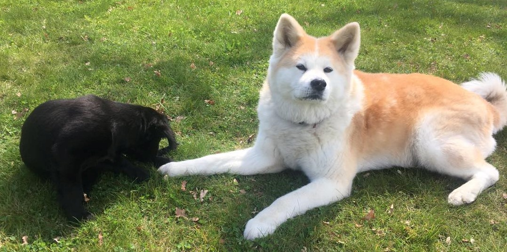
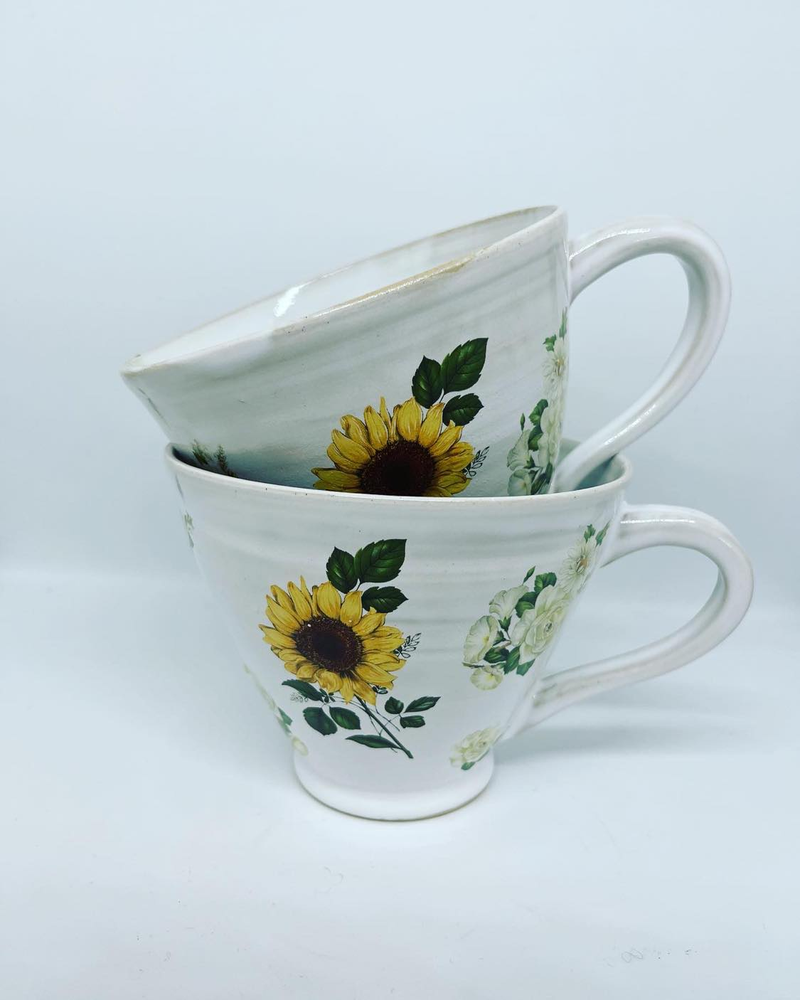
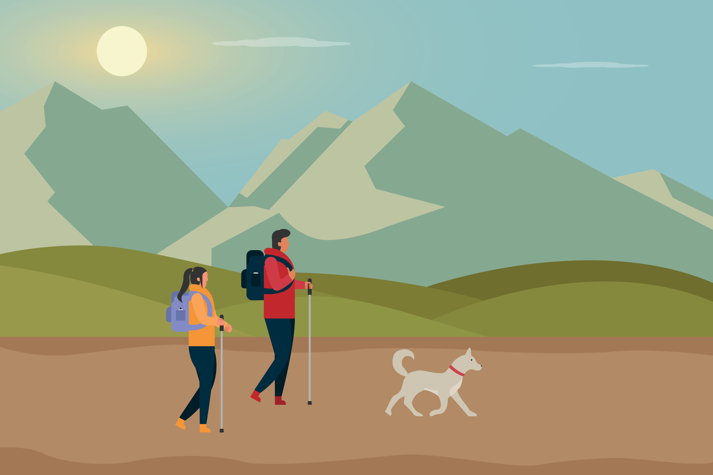

Biography
Basic information
I am 44 years old and I was born i Stockholm, Sweden. I have lived in or near Stockholm my whole life.
Work
I have stayed in the same workplace for 23 years. Before that I had multiple short employments eg. delivering the morning paper and working at Burger King for a short time.
Academic interests
Programming
I really enjoy programming in my job and that is one of the reasons I am taking the course on Javascript this semester. What I enjoy most about programming is creating something useful.
| Programming language | Proficiency |
|---|---|
| Python | Good |
| C | Beginner |
| SQL | Advanced |
| Programming languages in the table are examples of languages I have programed in. | |
Leadership and organizational development
I have a bachelors degree studying leadership, quality and improvement. What motivates me to study these areas are the way focusing on them can improve the output and also the job enjoyment for the employees.
Hobbies
Dogs
I got my first dog 14 years ago, an Akita Inu named Suki.
That was a dream come true! Sadly she passed away two years ago and I got a puppy,
an Akita Inu named Kenzo.
The image below pictures my first dog Suki with my sisters puppy three years ago in 2021.

My dogs:
- Suki, Akita, female, 2010-2022
- Kenzo, Akita, male, 2022-
Ceramics
Four years ago I discovered the joy of working with clay! Since then I have set up my
own ceramics studio where I create ceramics and give classes.
The image below shows two mugs I have made, they are some of my favorites.

Travel and reading
Other lifelong hobbies of mine are traveling and books. I have been to every continent but Antarctica. Since the covid pandemic I have'nt been on any longer trips though so I hope that will change in the near future. Something I enjoy doing on my free time is reading books, mainly suspense novels och crime.
Future goals
Trekking in the Scandinavian mountains
Next year my goal is to go trekking in the mountains with my dog for several days and sleeping together in a tent. 